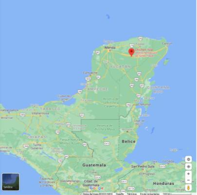
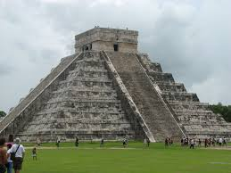

Chichén Itza
Chichén Itzá es uno de los principales sitios arqueológicos de la península de Yucatán (México) ubicado en el municipio de Tinum, en el estado de Yucatán. Se localiza a unos 115 kilómetros al este de Mérida. Si te preguntas cómo llegar a Chichén Itzá, es tan fácil como coger el coche y dirigirte por la carretera 180 hacia el poblado de Pisté, a 2 kilómetros de sitio arqueológico. Si necesitas más información, visita la Web Oficial del INAH, sitio online con toda la información oficina sobre la Zona Arqueológica de Chichén Itzá. |  | |
|---|---|---|
|  | Uno de los monumentos más impresionantes de la ciudad de Chichén Itzá es sin duda: La pirámide de Kukulkan, también conocida como «El Castillo» para los españoles por la similitud con la arquitectura Europea. Se cree que fue construido en el siglo XII D.C., por los mayas itzáes en la antigua ciudad de Chichén Itzá, perteneciente al estado de Yucatán en México. Su diseño tiene una forma geométrica piramidal, la cual sorprende su exactitud, y cuenta con nueve niveles, cuatro fachadas principales cada una con su respectiva escalinata central. |
|